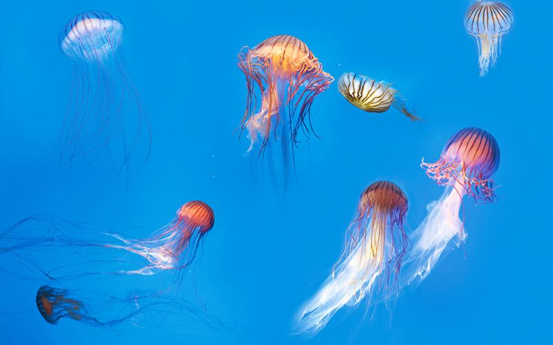
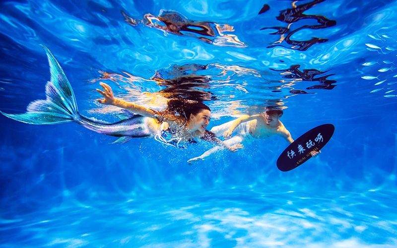

海洋生态馆，科普教育基地
海洋生态馆位于湖南长沙，2008年起对游人开放，是一家集游乐、观赏、科研、教育多功能为一体的，以陈列展览海洋鱼类为主要特色的蓝色海底世界。
全馆占地面积为1.5万平方米，馆内放养着200多种鱼类及其它独特罕见的海洋生物；主要的景观有：海底隧道、深海景观、18米长的热带珊瑚缸、珍品缸、触摸池、淡水世界、锦鲤池、鲨鱼馆、海狮乐园等，令游人眼界大开，乐而忘返。广 州海洋馆占地面积约1.3万平方米，是“广东海洋科普教育基地”和“全国科普教育基地”。


建筑特点
形独具一格的广州海洋馆，是一个集游乐、观赏、科研和科普教育为一体的多功能大型高科技展馆。全馆分多个区域全方位展示海洋世界，包括：如临其景的海底隧道、五光十色的深海奇观、飘飘渺渺的海藻缸、玲珑辉影的珍品缸、生机盎然的热带雨林、生动有趣的触摸池、惊险刺激的鲨鱼池、悠然自得的海龟池、冰天雪地的企鹅馆、寓教于乐的科普厅、精彩纷呈的海洋剧场、逗趣可爱的海狮乐园和独具特色的海洋广场等，这些展区特色鲜明，生动有趣，按照不同海洋生物的生态环境、生活习性、种类品种等进行规划布局，大大小小的缸内展示着来自世界各地的千奇百怪、珍稀罕有的海洋生物几百种，真实再现了神秘莫测、变幻万千、绚丽多姿的海洋世界。
社会责任—时刻不忘这里生息着约2500种海洋生物，是一个集教育、娱乐、休闲于一身的旅游圣地，展出的千奇百怪的海洋生物大多来自周边海域。